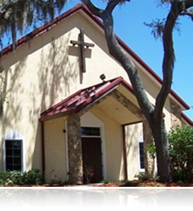

Our History
When the Diocese of Central Florida decided a mission church was needed in the East Orlando and Oviedo area. Bishop William Folwell asked Father Dan Smith, the assistant rector at Emmanuel Episcopal Church, to become the first Vicar.
Five beautiful acres of the highest elevated spot in East Orange County were selected and purchased. The home on the land was to be used as a church. During the time we waited for the house to be vacated, we met at the University Congregational Church on University Boulevard. The very first service was held December 1, 1985.
In June 1988, Father Smith resigned to accept a church in Kaiua, Hawaii. After much prayer and consideration we were very fortunate to have Father Charles Fritch become the second Vicar. With continued growth and a cramped building, we started a Building Fund Drive. We experience a glorious ground breaking on June 30, 1991. Father Dan Smith was visiting Orlando at the time and attended to help Father Charlie Fritch turn the first shovel of dirt for a grand, all-purpose meeting hall with sanctuary, sacristy, kitchen, nursery, classrooms, and offices.
St. Matthew’s officially became a Parish on January 24, 1992, at the 23rd Annual Diocesan Convention. Several members were in attendance with Father Fritch, to give thanks to the Diocese for giving us the opportunity and to God for making it a reality. The Certificate of Occupancy was granted to us on January 31, 1992, and on February 2, 1992, our Bishop of the Diocese of Central Florida, the Right Reverend John W. Howe, came to dedicate and consecrate the building, altar, eucharistic vessels, baptismal vessels, and all the furnishings of the church.
During the summer of 1995, another building committee was formed, this time to build our permanent church on our beautiful hilltop. On August 9, 1998, two hundred members were present for a glorious groundbreaking ceremony; thus beginning all the plans and work on our future church. Plans for a beautiful stained glass window depicting the resurrection of our Lord Jesus Christ were drawn and the window was installed over the Altar and Cross.
The first service in our beautiful new sanctuary was December 19, 1999, and the dedication service was January 9, 2000. In May 2005 the mortgage was paid off to the diocese and plans continue for the building of an education center.
Truly GOD has provide us with the facilities and the desire "To celebrate the Resurrection of Jesus Christ by offering to all a haven of love, fellowship and worship."